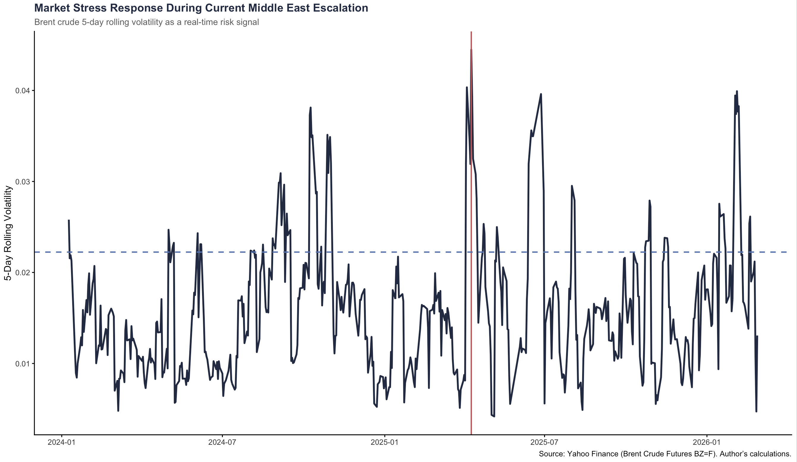
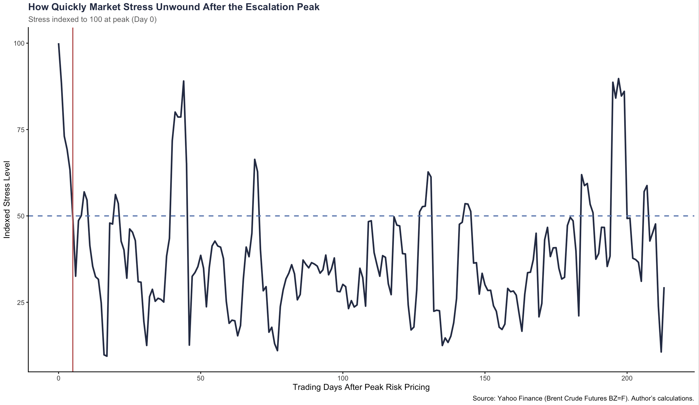

Geopolitics · Markets
Update — March 20, 2026
This post was written on March 1, at the start of what turned out to be a full-scale US-Israeli war with Iran. The volatility signal I identified as normalizing was intra-escalation noise, not genuine mean-reversion — the shock was still accelerating when this was published. Oil prices subsequently surpassed $100/barrel, the Strait of Hormuz was closed to commercial traffic, and the disruption has been characterized as the largest energy supply shock since the 1970s. The framework holds, but the call was wrong. The key lesson: volatility persistence analysis requires enough time post-peak to distinguish unwinding from a pause between escalation waves.
Geopolitical escalation in the Middle East creates immediate uncertainty for energy markets, global supply chains, and corporate decision-makers. When tensions rise, leaders must decide whether to treat the event as a temporary disruption or the beginning of a structural shift. That decision often has to be made before outcomes are clear.
Rather than attempting to predict how the conflict will evolve, this analysis focuses on a narrower question: how is the market currently pricing perceived supply risk, and how persistent does that stress appear to be?
Financial markets continuously process new information. By observing how long stress remains elevated, it is possible to infer whether market participants are embedding a lasting disruption premium or reacting to short-term uncertainty.

Figure 1. Market Stress Response During Current Middle East Escalation
This figure tracks short-term instability in Brent crude prices. Brent is widely used as a global oil benchmark and is closely linked to internationally traded crude flows, including those affected by Middle Eastern developments. Instead of examining price levels, the chart measures rolling volatility, which reflects how unstable prices have become over short intervals. Elevated volatility typically corresponds to heightened uncertainty or perceived disruption risk.
The navy line shows how volatility evolves over time. The red vertical line marks the day on which volatility reaches its highest level within the current escalation window. The dashed blue line represents half of that peak level and serves as a reference point for measuring persistence.
The data show that volatility rises sharply during the escalation period. The more relevant observation is what happens afterward. Rather than remaining elevated for an extended period, volatility begins to decline. At present, the stress signal does not appear to stabilize at a prolonged high plateau.
That pattern suggests that markets are reassessing perceived disruption risk relatively quickly, based on available information.
To make the duration of that reassessment clearer, the second chart normalizes stress to its peak value and tracks how it evolves afterward.

Figure 2. How Quickly Market Stress Is Unwinding After the Escalation Peak
This figure sets stress equal to 100 on the peak day and tracks its subsequent movement. This allows the duration of elevated stress to be evaluated independently of the absolute volatility level.
The navy line represents indexed stress following the peak. The dashed blue line marks 50 percent of peak intensity. The red vertical line identifies the trading day at which stress falls to half of its maximum value.
Based on the current data, stress declines to half of its peak within a relatively short trading window. That suggests that, at this stage, market participants are not embedding a sustained disruption premium consistent with a prolonged structural supply breakdown.
This observation does not imply that the geopolitical situation is resolved or that further escalation is impossible. It indicates that, as of now, the market is treating the event as a shock subject to rapid reassessment rather than as a persistent supply regime shift.
The strategic implication is tied to timing rather than prediction. Markets update continuously and adjust expectations in real time. Organizations, by contrast, often operate on slower decision cycles shaped by procurement processes, governance structures, and risk committees.
If perceived disruption risk normalizes more quickly than institutional responses adjust, there is a risk of misalignment. Leaders may implement structural changes in response to conditions that the market has already reclassified as temporary. Conversely, if escalation intensifies and stress remains elevated, the duration signal will change accordingly.
The value of this approach lies in monitoring persistence. Geopolitical events will always generate volatility. The duration of that volatility provides a measurable signal of how the system is interpreting the shock in real time.
As the situation evolves, the stress profile may change. For now, the observable data suggest rapid reassessment rather than prolonged panic. Watching that duration offers a practical lens for decision-makers navigating uncertainty without relying solely on headline-driven forecasts.